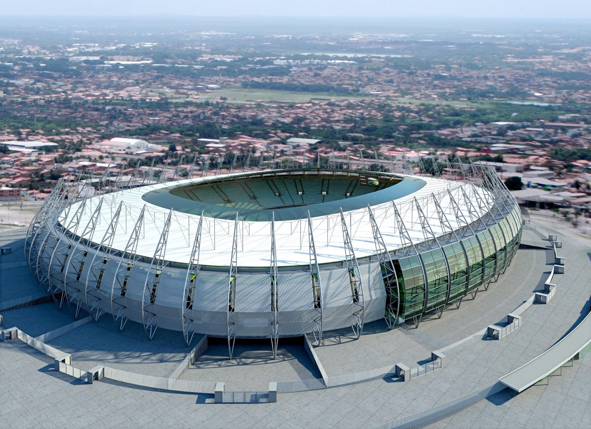
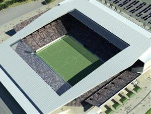
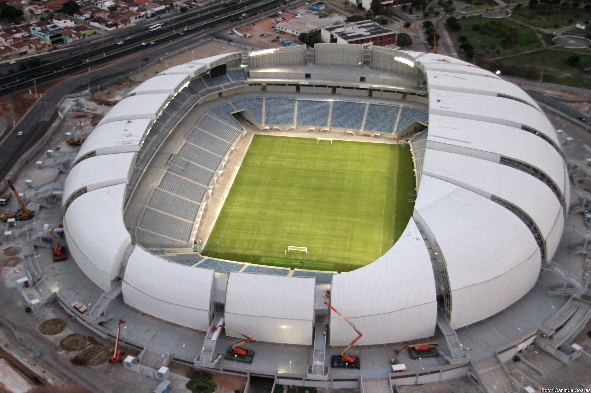

O grupo do Uruguai é o grupo D
| Uruguai | Seleções | Lugar | Estadio | Horaio | Dia |
|---|---|---|---|---|---|
| Uruguai | Costa Rica | Fortaleza | Castelão | 16:00H | Sab 14/06 |
| Uruguai | Inglaterra | São Paulo | Itaquerão | 16:00H | Qui 19/06 |
| Uruguai | Italia | Natal | Arena das Dunas | 13:00H | Ter 24/06 |
 O Estádio Governador Plácido Castelo, também conhecido como Arena Castelão, ou simplesmente Castelão, é um estádio de futebol brasileiro localizado em Fortaleza, Ceará, e inaugurado em 1973. O estádio foi reformulado em 2002, e totalmente reformulado novamente em 2012, visando a Copa do Mundo FIFA de 2014, para a Copa o castelão receberá seis jogos, entre ele dois jogos da Seleção Brasileira.
Sua capacidade atual foi reformulada para acolher confortavelmente públicos de até 64.846 pessoas, sendo considerado o vigésimo sétimo estádio maior do mundo e o quinto maior do Brasil. Já foi palco de grandes eventos esportivos e culturais, como jogos da Seleção Brasileira e a recepção ao Papa João Paulo II em 1980 em sua passagem por Fortaleza. Em 2013 foi uma das sedes da Copa das Confederações, em 2014 receberá jogos da Copa do Mundo, e em 2016, será um dos centros de treinamentos para as Olimpíadas, que acontecerá no Rio de Janeiro.
 Arena de São Paulo,6 cujo nome provisório é Arena Corinthians7 8 e que também é popularmente conhecida como Itaquerão, é um estádio de futebol localizado no distrito de Itaquera, na zona leste do município de São Paulo, Brasil. De propriedade do Sport Club Corinthians Paulista, foi inaugurada oficialmente em 18 de maio de 2014.
Com capacidade para 48 234 lugares, é o quinto maior estádio da Série A do Campeonato Brasileiro de Futebol e o 11º maior do Brasil. Durante a Copa do Mundo e pelo menos até o final de 2014, poderá receber até 69 160 espectadores.
Construído pela Odebrecht entre 2011 e 2014, tinha previsão de custo inicial em 820 milhões de reais , mas seu preço final atingiu 1,2 bilhão de reais. Será palco da cerimônia de abertura e de seis jogos da Copa do Mundo de 2014, incluindo o de abertura.
 Arena das Dunas é um estádio multiuso localizado na cidade de Natal, no estado brasileiro do Rio Grande do Norte. Além de partidas de futebol, o complexo tem a capacidade de abrigar eventos de grande porte, exposições e lojas comerciais. A estrutura foi inaugurada em 22 de janeiro de 2014, depois de 29 meses de obras, no lugar do Estádio João Machado. É gerenciada pela OAS Arenas.
Localizada no bairro de Lagoa Nova, entre a BR-101 e a Av. Prudente de Morais, duas importantes artérias viárias da cidade, a arena foi viabilizada através de uma Parceria Público-Privada entre a OAS Engenharia e o governo do estado, tendo a finalidade precípua de sustentar a candidatura da capital potiguar para a Copa do Mundo FIFA de 2014, onde receberá quatro partidas do evento mundial.
Posteriormente projetada para ter uso variado, se viabilizando financeiramente, o complexo tem a capacidade de 31.375 espectadores. Durante a Copa do Mundo, a arena contará com arquibancadas flexíveis, que permitirá a expansão para 42 mil assentos. A arquitetura do estádio, inspirada nas dunas do Rio Grande do Norte, foi projetada pela empresa estadunidense Populous.Arena das Dunas é um estádio multiuso localizado na cidade de Natal, no estado brasileiro do Rio Grande do Norte. Além de partidas de futebol, o complexo tem a capacidade de abrigar eventos de grande porte, exposições e lojas comerciais. A estrutura foi inaugurada em 22 de janeiro de 2014, depois de 29 meses de obras, no lugar do Estádio João Machado. É gerenciada pela OAS Arenas.